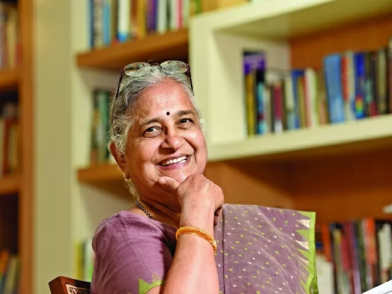

Sudha Murthy
Sudha Murty (née Kulkarni) is an Indian engineering teacher who excels as an author in Kannada, Marathi and English language.she was born on August 19, 1950, in Shiggaon, Haveri in Karnataka, India, to Dr R. H. Kulkarni and Vimala Kulkarni.She is mainly known for her philanthropic work. She currently serves as the Chairperson of the Infosys Foundation and is the wife of the co-founder of Infosys, N.R. Narayana Murthy.
what is Sudha Murthy known for?
Sudha Murty is best known for her philanthropy and her contribution to literature in Kannada and English. Dollar Bahu ( lit. 'Dollar Daughter-in-Law'), a novel originally authored by her in Kannada and later translated into English as Dollar Bahu, was adapted as a televised dramatic series by Zee TV in 2001.
what organisations was Sudha Murthy associated with?
She also worked with Walchand group of Industries at Pune as Senior Systems Analyst. In the year 1996, she established the Infosys Foundation and is currently the Chairperson of the organization. She is also a visiting Professor at Bangalore University.
Sudha Murty: Social Activity
In 1996, Sudha Murty founded a Public Charitable Trust. The trust has so far built 2,300 houses in the flood-affected areas. She also has a vision of a library for each school and has so far set up 70,000 libraries. Her organization has so far built 16,000 public toilets.
What is an interesting fact about Sudha Murthy?
The Most Remarkable Fact About Sudha Murthy Is That She Was The First Female Engineer To Be Hired At TATA Engineering And Locomotive Company, Telco, Which Is India's Largest Auto Manufacturer
What is Sudha Murthy's net worth?
Sudha N. Murthy Openly Owns 1 Equity, According To Corporate Shareholdings Disclosed For September 30, 2022, And Has A Net Worth Of More Than Rs. 5,345.8 Crore.